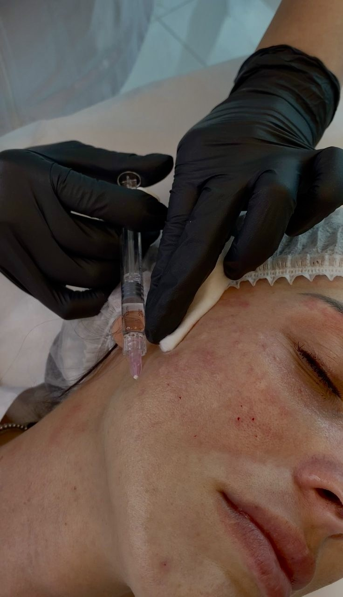
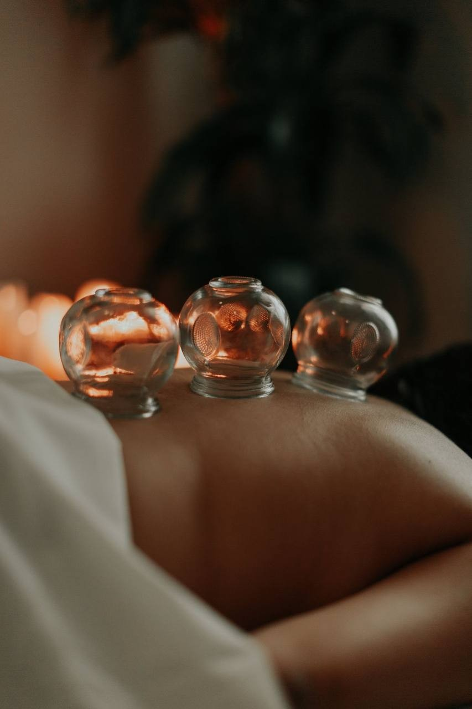
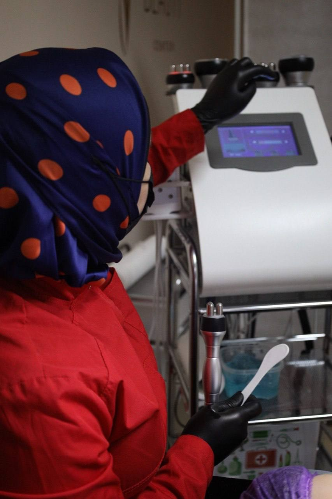
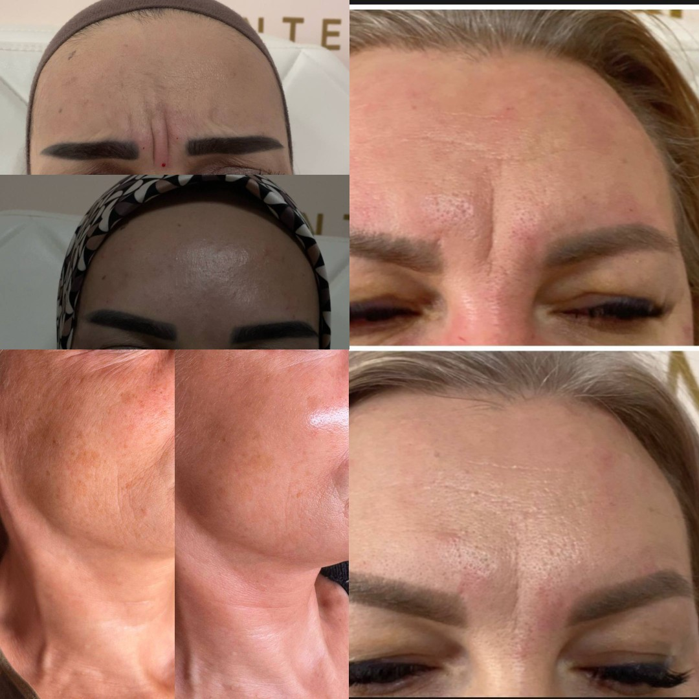

индивидуальный подход к восстановлению организма


РАБОТАЮ НЕ ТОЛЬКО С ВНЕШНИМИ ПРОЯВЛЕНИЯМИ, НО И С ПРИЧИНАМИ ЭСТЕТИЧЕСКИХ ПРОБЛЕМ. СПЕЦИАЛИЗИРУЮСЬ НА ЛЕЧЕНИИ АКНЕ, КОРРЕКЦИИ ВОЗРАСТНЫХ ИЗМЕНЕНИЙ И УЛУЧШЕНИИ КАЧЕСТВА КОЖИ. В СВОЕЙ ПРАКТИКЕ ИСПОЛЬЗУЮ КОМПЛЕКСНЫЙ ПОДХОД: АНАЛИЗЫ, ДИАГНОСТИКУ, ПОДБОР ИНДИВИДУАЛЬНЫХ СХЕМ ВОССТАНОВЛЕНИЯ, КОСМЕТОЛОГИЧЕСКИЕ ПРОЦЕДУРЫ И РЕКОМЕНДАЦИИ ПО ПИТАНИЮ И ОБРАЗУ ЖИЗНИ.

МОЙ ПОДХОД ОСНОВАН НА ИНТЕГРАТИВНОЙ КОСМЕТОЛОГИИ — Я РАССМАТРИВАЮ КОЖУ КАК ОТРАЖЕНИЕ СОСТОЯНИЯ ОРГАНИЗМА В ЦЕЛОМ.
ПРИ РАБОТЕ С АКНЕ, ВОСПАЛЕНИЯМИ, ТУСКЛЫМ ЦВЕТОМ ЛИЦА, ВОЗРАСТНЫМИ ИЗМЕНЕНИЯМИ И ДРУГИМИ ЭСТЕТИЧЕСКИМИ ПРОБЛЕМАМИ Я НЕ ОГРАНИЧИВАЮСЬ ТОЛЬКО ПРОЦЕДУРАМИ. ПРИ НЕОБХОДИМОСТИ МЫ АНАЛИЗИРУЕМ ОБРАЗ ЖИЗНИ, ПИТАНИЕ, РЕЗУЛЬТАТЫ АНАЛИЗОВ И ВОЗМОЖНЫЕ ВНУТРЕННИЕ ПРИЧИНЫ НАРУШЕНИЙ.
КАЖДАЯ ПРОГРАММА ПОДБИРАЕТСЯ ИНДИВИДУАЛЬНО И МОЖЕТ ВКЛЮЧАТЬ:
ТАКОЙ КОМПЛЕКСНЫЙ ПОДХОД ПОМОГАЕТ НЕ ПРОСТО ВРЕМЕННО УЛУЧШИТЬ ВНЕШНИЙ ВИД КОЖИ, А ДОБИТЬСЯ БОЛЕЕ УСТОЙЧИВОГО И ДОЛГОСРОЧНОГО РЕЗУЛЬТАТА.
Освойте востребованную профессию или повысьте свою квалификацию.
Я провожу обучение для начинающих специалистов и практикующих мастеров, которые хотят получить новую профессию или расширить свои профессиональные навыки.
Доступные направления обучения:
В процессе обучения особое внимание уделяется не только теории, но и практической отработке навыков. Моя цель — помочь каждому ученику уверенно применять полученные знания в работе и развиваться в выбранной профессии.
После прохождения обучения вы получаете необходимые знания, практический опыт и поддержку на пути профессионального роста.
Здесь представлены некоторые работы и изменения, которых удалось достичь благодаря индивидуальному подходу и комплексной работе с кожей.
Еще больше фотографий «До/После», отзывов и результатов клиентов вы найдете в моем Instagram, где я регулярно делюсь процессом лечения, процедурами и кейсами из практики.

Запишитесь на консультацию, и мы вместе подберем решение именно для вашей ситуации. Также вы можете обратиться по вопросам обучения, повышения квалификации и сотрудничества.